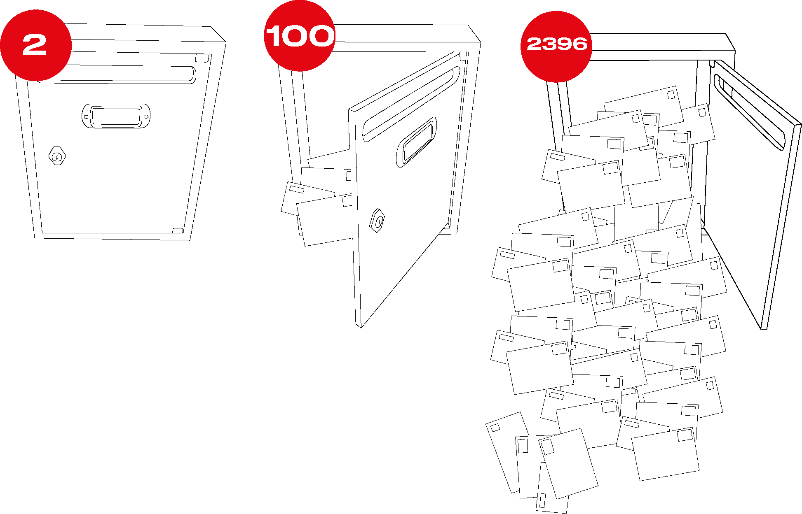

Still rendering
Week 02 refletions.
The second week we were into CAD programs. At first, it was a surprise for me to learn Blender as a resource to make my models. However, I found it interesting as a resource for visualizing organics 3D to develop my typos or improve my animation skills.
First, I did an example of chroma typography that fits on my graphic design line to enhance the quality of my posters. The tools inside the sculpting option allow me to modify the shapes organically. After trying the typography I was able to render it on Keyshot and modify some parameters on Photoshop.
Secondly, I always wanted to develop a “satisfying” animation so I tried to learn with some tutorials. I found Blender animation tools easy in a way but took me too long to render it. (as in Keyshot). Finally, I found fascinating the way Blender is developed by “prosumers” and how the software is open-source with the same capacity as other more expensive software that I tried.
As a resource to make storytelling I choose Illustrator to play with shapes and build vignettes. As we saw in class the vectors let allow me to make from a plane to more conceptual drawings. I decided to make mailbox storytelling to convey my concept even if I haven’t the final design yet.